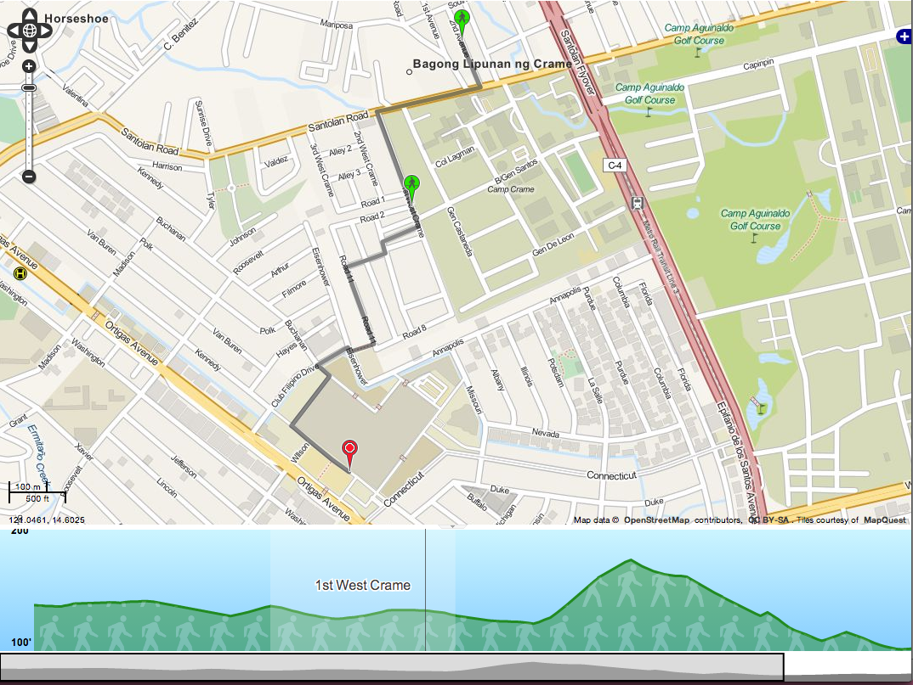
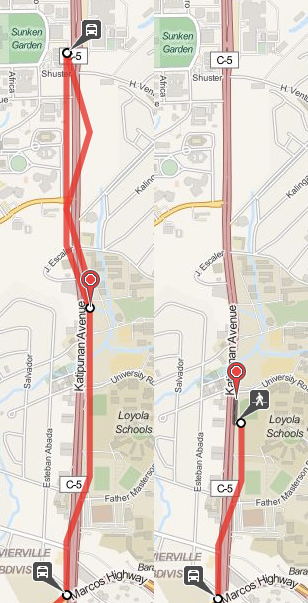
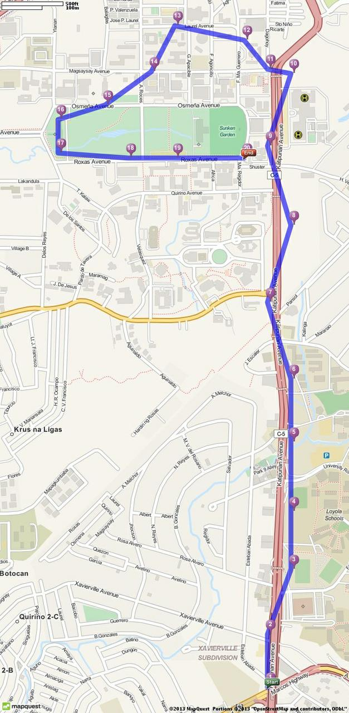

Geocoding Services Posted: 2013-09-25 12:26
A key component for any routing service is being able to do geocoding. Most people who are looking for routes most probably don't know exactly where their start and end points are on the map. Even then, manually looking for a location on a map is a time-consuming task.
The gold standard for doing geocoding right now is Google Maps. It's hard to find a better location search experience. If they actually provided routing for jeeps here in the Philippines, I imagine there wouldn't be that much you could do for the competition.
When the competition started though, I took it as a challenge to avoid Google Maps as much as possible. I wanted to see how much is currently possible with other options such as OpenStreetMap. In fact, OSM does have a geocoding service called Nominatim.
Sadly, for a mapping app, what you want to do is not simply just geocoding. With geocoding, you take an address and turn it into coordinates. When you want to search for a place in a mapping app, you take part of an address, infer the rest of it, and give the user options to choose from.
Given a typical mapping app, you might type in "ateneo" and expect it to give you Ateneo de Manila University. With typical geocoding services like Nominatim or even Google's geocoding API, you probably won't get any result for this. What you want to use is the Places API which provides an autocomplete search box. Using it, when you type in "ateneo", it automatically suggests in the dropdown, "Ateneo de Manila University".
A downside to using the Places API is that it's against the terms of service to use it with something that isn't Google Maps, which means no OpenStreetMap. If there were more time, writing your own autocompletion engine using OpenStreetMap's data will probably be a better long term solution.
For now, since the competition's deadline is just a few days away, I'll be using Google Maps.
Jeep and Bus Schedules Posted: 2013-07-28 16:26
Wouldn't it be wonderful if there were no buses or jeepneys in the Philippines over the weekends? It would truly be a cyclist's paradise. Imagine biking along EDSA, normally that would be a death sentence, but according to the GTFS data, you shouldn't worry. I can assure you, it's still a death sentence.
The GTFS spec defines 2 ways of statically specifying trip schedules. You can define the exact times that a service will arrive at a stop. You can also specify between what times the service is active and how often a new bus or jeep leaves the first stop. You also define which days those rules apply. You could say every MWF, the bus operates from 9:00AM to 9:00PM and every TTH, the bus services from 3:00AM to 11:00PM.
This should be sufficient in theory, but real world conditions like traffic or the weather could throw the schedules off. To solve this, there's another spec, GTFS-realtime. This allows transit agencies to push temporary schedule updates and service announcements.
Like much everything else about the Philippine transit system, there aren't really any "schedules" to speak of. It's generally whenever the buses or jeeps feel like it. So we have no static schedules. We don't have a central agency or the tracking technology to make it feasible to push updates via GTFS-RT.
Ideally, we shouldn't bother inputting the schedule information into GTFS. Only the route data is really important for jeeps and buses. However, the schedule information is required in the GTFS, and routing apps wouldn't work without it. So we have to add a reasonable trip schedule for jeeps and buses.
The current GTFS data does define these trip schedules. We assume that jeeps and buses operate between 6:00AM and 11:00PM and a new jeep passes by every 10 minutes. Also, jeeps and buses are defined to only operate on weekdays.
While there might be jeeps who change routes or don't operate on weekends, I'm pretty sure that jeeps and buses run on weekends. We'll have to fix it ourselves temporarily since there's no central GTFS feed yet.
# 724594 seems to be the service id used by jeeps and buses sed -i .bak '/^724594/ s/0,0/1,1/' calendar.txt
Another thing we could do is to adjust the time between buses, although the improvement is arguable. With the current 10 minutes between jeeps, it might provide some routes a significant advantage just because the timing is right. So you might get differing route suggestions depending on what time you planned the route. This makes sense when you're sure what the times are, so you can minimize the wait, but with jeeps, you never really know how long the wait will actually be.
If we set the frequency to one minute, it might give better routes by eliminating the timing issue. Or not, it's kind of hard to tell.
# jeep and bus route ids tend to start with 72 sed -i .bak '/^72/ s/,600/,60/' frequencies.txt
Overall, the problems we're having is a symptom of the mismatch between our transit system and the GTFS. It would be great if our transit system gets better and we don't need to do hackish things for it to fit the GTFS, but that's still a dream. For now, all we can really do is fit a triangle into a square hole.
Highways in OTP Posted: 2013-07-24 23:15
One of the weird things that happens with OTP is sometimes it gives absurdly roundabout routes. Here is OTP's suggested route for walking from UP to Ateneo:

This is just so hilariously wrong. It's much simpler to just walk along Katipunan Avenue.
OTP couldn't possibly be that dumb though, so there must be something we're doing wrong. If you notice, Katipunan Avenue is colored red compared to the other streets. OTP seems to be avoiding any path that goes along Katipunan Avenue. The problem might have something to do with the "road type" designated to Katipunan.
Apparently, by default OTP will consider roads of type trunk to be non-walkable and non-bikable. This is documented in the OpenStreetMap wiki and the OTP wiki as well. There are actually multiple ways to go about this then. The first solution that came to mind was to just edit the original OSM XML file.
sed -i .bak s/trunk/primary/g manila.osm
And rebuild the graph. It doesn't really matter much because the OSM data isn't used to render the maps. It's just used to build the routing data. This is actually what I did for maps.pleasantprogrammer.com.
It's also possible to set the default way properties in OTP. Instead of disallowing walking and biking on highway=trunk we could allow that. This is not much better than the sed solution though. It's better since you keep the weighting done by OTP, but you're still saying that all trunks are walkable which might not be the case.
The most correct way to actually fix this is to go through each of the trunks and specifying foot=yes and bicycle=yes for those trunks that are actually walkable. You could either do this locally with the dumped data, or contribute it directly to OSM. I'm not sure on the particulars with updating OSM though.
Elevation Data in OTP Posted: 2013-07-23 18:23

One thing I hadn't tested out last time was OTP's support for elevation data. It makes use of this by showing the elevation you have to traverse while walking along the suggested route. It can also take it into account when suggesting bike routes.
The 5 minute tutorial actually discusses the elevation data briefly, but a more in-depth thing you can look at is the GraphBuilder documentation. It suggests using the ASTER dataset which is free but requires registration. I just opted to use the SRTM data available from the PhilGIS website.
I don't know about the ASTER dataset, but the PhilGIS data was in the ERDAS img format. OTP only supports GeoTIFF so there was a need to convert it beforehand. You can use GDAL for this. You'd just then run,
gdal_translate srtm41_90m_phl.img phil.tiff
Afterwards, it's just a matter of following the OTP instructions on using a local elevation dataset. The process actually doubled the size of the generated Graph.obj so it might not be ideal if you're running on limited RAM.
I've actually hosted a working example. It's pretty much at the limits of the RAM so it might be slow and unreliable, but you can test it out just for fun. Please don't abuse it though.
GraphServer Posted: 2013-07-23 14:48
Link: http://graphserver.github.io/graphserver/
One other routing webapp I saw was GraphServer. It's actually more of a general purpose Graph library which supports GTFS and OSM data than an actual dedicated routing software like OpenTripPlanner. It's also based off python and C instead of Java, so it feels a lot less heavy.
The instructions on the website are already pretty good. There are just some minor errors with it. Where it says gs_gtfsdb_build, you should actually use gs_gtfsdb_compile. Also, when running gs_osmdb_compile you might need to use -t for tolerant in case you follow the instructions on chopping up the original OSM data.
A nice suggestion from the GraphServer instructions was to crop the OSM data to minimize the graph size. This is actually quite helpful if you downloaded the entire Philippine OSM dump. It reduced the original 900MB file to 135MB which was a lot more workable. I did hit a problem with their instructions though. The linked version of osmosis is an old one, which doesn't support 64-bit ids. The latest version of Osmosis easily did the job though.
The actual routing though, was not exactly good. I only tried one route which should normally take 1-2 transfers, it suggested a route which involved 4+ transfers. It also didn't provide any alternate routes aside from that one. I'm not sure if it's a limitation of the provided routeserver, but I didn't bother checking if it supported parameters which might provide better routes.
I think graphserver could be useful, but it seems more involved than say OpenTripPlanner. There do seem to be people who use graphserver for their routing apps, but for the bounds of the contest, or just as a side project, it might require too much effort.
Transit Wand Posted: 2013-07-15 22:45
Link: http://transitwand.com
Overall, this was the simplest of the open-source transit tools to actually get up and running. There's already a deployed instance of the server, and you can easily download the phone app via the Play Store. Even running the server by yourself didn't have any of the hiccups I had with GTFS Editor.
The phone app is actually quite simple. It allows you to capture a trip, which will record your GPS coordinates as you ride public transit. It also allows you to mark points of the trip where you stop and also how long the stop took. Lastly, it allows you to record embarking and disembarking passengers which is potentially useful for ridership data.
After doing a capture session, you can review the data on the phone. It will plot out the route on a map, with markers for the stops. You then either delete the data if it looks wrong, or you can upload it to the Transit Wand server. Uploading involves registering an account, but it's free and you don't even actually need to put in a username or anything. It simply registers the phone's IMEI on the server and gives you a 6-digit identifier.
You can then use the 6-digit identifier to view the data on Transit Wand's server, which is good since uploading any data automatically deletes it from the phone. There really isn't much else you can do with it though. It just allows you to view the data, and export it as a Shapefile.
As is, this is purely a data collection client-server app. Barring looking at the database, there is no way to get a list of phones which have collected data. Only the person who initiated the data collection knows the 6-digit code to view their data. There's also no way to extract the ridership information from the server yet. This isn't to say that the data won't eventually go public though.
An interesting thing you can do with the Transit Wand data is import it into GTFS Editor to make a new route. You don't even have to manually download and upload the data. Just type in your 6-digit identifier and it will give you a list of routes you've captured via Transit Wand. This is wonderful as you get all the stop data, as well as the shape of the route.
I imagine these two tools were how the DOTC came up with all the GTFS data we have now. What I don't understand is why the shape data isn't present. Importing from Transit Wand already gets you shape data. There are even facilities to edit the shape within the editor if clean up is necessary. The only problem I saw was the fact that you can't easily move stops, you have to input coordinates to change the position.
It might also be possible that when the DOTC was still collecting the data, the route collection or editing features weren't present yet. That would just be lame and depressing though.
Overall, Transit Wand does what it's supposed to do. You collect data, and then upload it to a server. There is a lot of room for improvement though. It would be nice to have a better API that allows access to more of the data. Building in analysis tools for the ridership data might also be a welcome thing. I imagine it would also be great if you could encourage people to use the app and upload their own trips.
Fare Data Posted: 2013-07-13 21:15
As part of the data released by the DOTC, we also have the fare matrix for aircon buses, ordinary buses and jeeps. All as wonderful images. The data is also actually available from the LTFRB website. Generally, the fare scheme is represented as "pay X pesos for the first Y kilometers, pay Z for every succeeding kilometer." Instead of a table, we can simply represent this as a formula instead,
base_fare + (distance - initial) * per_km
The relevant values for the three services are:
| type | base_fare | initial | per_km |
| bus aircon | 12.00 | 5 km | 2.20 |
| bus ordinary | 10.00 | 5 km | 1.85 |
| jeep aircon | 8.00 | 4 km | 1.40 |
It isn't as simple as that though. Fares are also rounded to the nearest 25 centavos. So we'd need to round them off correctly. This can be achieved by doing,
round(calculated_fare * 4.0)/4.0
There's also the discounted fare for students, senior citizens and persons with disability. They get 20% off the fare (prior to rounding) and the resulting fare is rounded off as well.
Doing just this, we actually do get the same results as the fare matrices in the image for the most part. There are some discrepancies with the discounted jeep fares. I've tried to resolve it by tweaking around with the formulas, but it really doesn't make sense in any way. I presume these were manually adjusted for one reason or another.
Here's a script that generates CSVs of all the three fare matrices. If you're too lazy to run it, here are links to the aircon bus, ordinary bus and jeep fare matrices.
GTFS compatibility
As is, the provided GTFS data does not have any fare data. I imagine this is because the existing spec doesn't have good support for distance-based fares like we have in the Philippines. Judging from the fare examples, the only reasonable way we could implement distance-based fares is following example 6. This would involve setting a fare for each possible pair of stops based on the distance between them. This isn't exactly ideal. In fact, the people originally working on the DOTC project have voiced issues and made proposals for having distance-based fares included into GTFS.
Apparently, public transit fares are a really complicated thing. You have fares based on distance, number of stops passed through, and transfers which may or may not cost extra. Not only that, you might have discounted fares, or first-class vs economy fares. The community will want to get it right before it's formally included in the spec. You can see the current state of the consolidated GTFS fare proposal here.
Even in it's proposal form though, we might have hope of being able to see these being used. There's currently a pull request for supporting the distance-based fare scheme into the OneBusAway libraries. The libraries actually used by GTFS Editor and OpenTripPlanner for working with GTFS data.
Remaining Problems
Given all that, it would probably still be a long way before this allows us to make a really good routing app. We still don't have shape data, so the distance estimates would really be rough estimates at best. There's no support for rounding to the nearest centavo. I realize that's just nitpicking, but if we want something truly polished, even that has to be taken care of.
We also don't know if the jeeps or buses strictly follow the distance-based scheme. After all, if you can get on and off anywhere, you can't really measure distance that exactly. I assume they generally work off the notion of "zones" than actual distance travelled. In that sense, they work more similarly to the LRT which has fares based on how many stops you pass. For jeeps and buses, your fare is probably based more on how many "zones" you pass through.
Conclusion
Philip, a co-worker of mine at By Implication, had suggested that we might want to use a different model than what the GTFS proposes. I have to agree with him. At this point, the GTFS doesn't really fit with our system. But I do think that open data and standards are great. In fact, I applaud the developers who made proposals for the fare system, as those are great first steps towards making the GTFS a more universal standard.
Side note: I'd also actually really like to hear about the DOTC developers' experience with the project. It would be nice if they had a devblog.
GTFS Editor Posted: 2013-07-10 11:30
Link: https://github.com/conveyal/gtfs-editor
TL;DR they really meant under development
When I first saw the source of GTFS Editor, I was ecstatic. They used Play framework!!! Not only that, they're targeting PostgreSQL as the main database. Those are our favorite tools for building webapps at By Implication. I was a bit sad though, when I saw it was on the 1.x release of Play though. I did have some experience with that release, but not as much compared to 2.x.
Getting it to actually run though, wasn't very pleasant. The initial setup was easy enough. Get Play 1.2.5, install Postgres with PostGIS, clone the repo and create backing database in Postgres. Some minor additional steps you need are to create the PostGIS extension on the database. The schema is automatically generated and applied by Play so that should be all that's necessary. Wonderful. Then, run play, open a browser, go to http://localhost:9000, compilation error. Fantastic.
If you don't want to go through the technical details, you can just jump to the conclusion.
Let's Debug!
I'll be splitting the next section up into 2 parts. In the first pass, I'll talk about what I did to just get the app to run but I won't try hard to fix any bugs. This generally is what I do when I try to get apps to run. I'll also be dropping enough information so that you can actually figure out what the real problem is. In the second pass, I'll explain what the problems were and how I fixed them.
First Pass
A thing to note about Play (and one of the reasons it's a lovely Java framework) is that you don't need to do manual compilation. Just edit some source files, refresh your browser and it will automatically do the compilation for you. One less argument for using PHP. It even shows you (in the browser!) the source and which line of code caused the compilation error. So that's what I saw, Error: type Check already defined
@Retention(RetentionPolicy.RUNTIME) @Target({ElementType.METHOD, ElementType.TYPE}) public @interface Check { // error here String[] value(); }
You also know that typical behavior among programmers where your program doesn't compile, but you keep trying to compile it anyway hoping that it will magically just work. That's what I did, and it actually ran. I couldn't really just let this pass, so I decided to try deleting Check.java. I got another compilation error, Error: type Secure already defined
public class Secure extends Controller { // error here @Before(unless={"login", "authenticate", "logout"}) static void checkAccess() throws Throwable {
At that point, I just decided to just debug it later. It works by just forcing it anyway. So I put Check.java back in and proceeded to just refresh until it compiled and ran.
The next problem is a sort of common thing most webapp developers have to solve one way or another. How do you set up the initial admin account? Phrased a different way, how do I login to this thing? The first thing I tried was just add a user into the account table directly. One problem though was how to set the password correctly. Plaintext obviously wouldn't work.
Another note regarding Play 1.x, it provides the secure module which handles logins and keeping state, you simply need to implement the method boolean authenticate(String username, String password). It leaves the actual process of verifying the login to the programmer. This can be exploited by just making the method return true and then any login would work. No need to actually set the password. Excellent.
And we're logged in, just in time to encounter a runtime exception. This also works much like compilation errors in Play. It shows a page with the error and the relevant source lines. Now we get, IndexOutOfBoundsException occured : Index: 0, Size: 0
if(session.get("agencyId") == null) { Agency agency = agencies.get(0); // error here session.put("agencyId", agency.id); session.put("agencyName", agency.name);
Apparently, we need to have an agency. That's generally simple enough. You just manually insert an agency into the agency table. After that's done, we finally have a view of the actual application. It's very Bootstrap-y, but that's just fine. The workflow though, is not perfectly intuitive, but I'll talk about that some other day.
That's not the end of it though, we still have to fix these bugs. The developer obviously didn't have to put up with this when they were working, so what happened? Also, the log is showing some weird things,
~ _ _
~ _ __ | | __ _ _ _| |
~ | '_ \| |/ _' | || |_|
~ | __/|_|\____|\__ (_)
~ |_| |__/
~
~ play! 1.2.5, http://www.playframework.org
~
~ Ctrl+C to stop
~
CompilerOracle: exclude jregex/Pretokenizer.next
Listening for transport dt_socket at address: 8000
23:32:14,943 INFO ~ Starting /Users/thomas/Workspace/maps/gtfs-editor
23:32:14,948 WARN ~ Declaring modules in application.conf is deprecated. Use dependencies.yml instead (module.secure)
23:32:14,948 INFO ~ Module secure is available (/Users/thomas/.root/opt/play-1.2.5/modules/secure)
23:32:15,830 WARN ~ You're running Play! in DEV mode
23:32:15,952 INFO ~ Listening for HTTP on port 9000 (Waiting a first request to start) ...
23:32:28,792 ERROR ~
@6f02fa9dd
Internal Server Error (500) for request GET /
Compilation error (In /app/controllers/Check.java around line 10)
The file /app/controllers/Check.java could not be compiled. Error raised is : The type Check is already defined
play.exceptions.CompilationException: The type Check is already defined
at play.classloading.ApplicationCompiler$2.acceptResult(ApplicationCompiler.java:246)
at org.eclipse.jdt.internal.compiler.Compiler.handleInternalException(Compiler.java:672)
at org.eclipse.jdt.internal.compiler.Compiler.compile(Compiler.java:516)
at play.classloading.ApplicationCompiler.compile(ApplicationCompiler.java:282)
at play.classloading.ApplicationClassloader.getAllClasses(ApplicationClassloader.java:426)
at play.Play.start(Play.java:516)
at play.Play.detectChanges(Play.java:630)
at play.Invoker$Invocation.init(Invoker.java:198)
at Invocation.HTTP Request(Play!)
23:32:31,551 INFO ~ Connected to jdbc:postgresql://127.0.0.1/gtfs_editor
SLF4J: Class path contains multiple SLF4J bindings.
SLF4J: Found binding in [jar:file:/Users/thomas/Workspace/maps/gtfs-editor/lib/slf4j-log4j12-1.6.1.jar!/org/slf4j/impl/StaticLoggerBinder.class]
SLF4J: Found binding in [jar:file:/Users/thomas/.root/opt/play-1.2.5/framework/lib/slf4j-log4j12-1.6.1.jar!/org/slf4j/impl/StaticLoggerBinder.class]
SLF4J: See http://www.slf4j.org/codes.html#multiple_bindings for an explanation.
23:32:32,490 INFO ~ Initializing HBSpatialExtension
23:32:32,492 INFO ~ Attempting to load Hibernate Spatial Provider org.hibernatespatial.postgis.DialectProvider
23:32:32,494 INFO ~ Checking for default configuration file.
23:32:32,496 INFO ~ No configuration file hibernate-spatial.cfg.xml on the classpath.
23:32:34,077 INFO ~ Application 'gtfs-editor' is now started !
23:32:34,151 INFO ~ Bootstrapping Database...
23:32:34,297 DEBUG ~ select count(*) as col_0_0_ from Agency agency0_ limit ?
play.exceptions.UnexpectedException: Unexpected Error
at play.vfs.VirtualFile.contentAsString(VirtualFile.java:180)
at play.templates.TemplateLoader.load(TemplateLoader.java:78)
at play.test.Fixtures.loadModels(Fixtures.java:174)
at jobs.BootstrapDatabase.doJob(BootstrapDatabase.java:57)
at play.jobs.Job.doJobWithResult(Job.java:50)
at play.jobs.Job.call(Job.java:146)
at play.jobs.Job.run(Job.java:132)
at play.jobs.JobsPlugin.afterApplicationStart(JobsPlugin.java:116)
at play.plugins.PluginCollection.afterApplicationStart(PluginCollection.java:531)
at play.Play.start(Play.java:547)
at play.Play.detectChanges(Play.java:630)
at play.Invoker$Invocation.init(Invoker.java:198)
at play.server.PlayHandler$NettyInvocation.init(PlayHandler.java:189)
at play.Invoker$Invocation.run(Invoker.java:276)
at play.server.PlayHandler$NettyInvocation.run(PlayHandler.java:229)
at java.util.concurrent.Executors$RunnableAdapter.call(Executors.java:439)
at java.util.concurrent.FutureTask$Sync.innerRun(FutureTask.java:303)
at java.util.concurrent.FutureTask.run(FutureTask.java:138)
at java.util.concurrent.ScheduledThreadPoolExecutor$ScheduledFutureTask.access$301(ScheduledThreadPoolExecutor.java:98)
at java.util.concurrent.ScheduledThreadPoolExecutor$ScheduledFutureTask.run(ScheduledThreadPoolExecutor.java:206)
at java.util.concurrent.ThreadPoolExecutor$Worker.runTask(ThreadPoolExecutor.java:895)
at java.util.concurrent.ThreadPoolExecutor$Worker.run(ThreadPoolExecutor.java:918)
at java.lang.Thread.run(Thread.java:680)
Caused by: play.exceptions.UnexpectedException: Unexpected Error
at play.vfs.VirtualFile.inputstream(VirtualFile.java:111)
at play.vfs.VirtualFile.contentAsString(VirtualFile.java:178)
... 22 more
Caused by: java.io.FileNotFoundException: /Users/thomas/.root/opt/play-1.2.5/modules/docviewer/app/initial-agencies-data.yml (No such file or directory)
at java.io.FileInputStream.open(Native Method)
at java.io.FileInputStream.<init>(FileInputStream.java:120)
at play.vfs.VirtualFile.inputstream(VirtualFile.java:109)
... 23 more
23:32:34,316 ERROR ~ java.lang.RuntimeException: Cannot load fixture initial-agencies-data.yml: Unexpected Error
23:32:40,989 DEBUG ~ select account0_.id as id15_, account0_.active as active15_, account0_.admin as admin15_, account0_.agency_id as agency9_15_, account0_.email as email15_, account0_.lastLogin as lastLogin15_, account0_.password as password15_, account0_.passwordChangeToken as password7_15_, account0_.username as username15_ from Account account0_ where account0_.username=? limit ?
23:32:40,994 DEBUG ~ select count(*) as col_0_0_ from Account account0_ limit ?
23:32:40,999 DEBUG ~ select nextval ('hibernate_sequence')
23:32:41,051 DEBUG ~ insert into Account (active, admin, agency_id, email, lastLogin, password, passwordChangeToken, username, id) values (?, ?, ?, ?, ?, ?, ?, ?, ?)
23:32:41,061 DEBUG ~ select agency0_.id as id24_, agency0_.color as color24_, agency0_.defaultLat as defaultLat24_, agency0_.defaultLon as defaultLon24_, agency0_.defaultRouteType_id as default12_24_, agency0_.gtfsAgencyId as gtfsAgen5_24_, agency0_.lang as lang24_, agency0_.name as name24_, agency0_.phone as phone24_, agency0_.systemMap as systemMap24_, agency0_.timezone as timezone24_, agency0_.url as url24_ from Agency agency0_ order by agency0_.name
23:32:41,175 ERROR ~
@6f02fa9dg
Internal Server Error (500) for request GET /
Execution exception (In /app/controllers/Application.java around line 57)
IndexOutOfBoundsException occured : Index: 0, Size: 0
play.exceptions.JavaExecutionException: Index: 0, Size: 0
at play.mvc.ActionInvoker.invoke(ActionInvoker.java:237)
at Invocation.HTTP Request(Play!)
Caused by: java.lang.IndexOutOfBoundsException: Index: 0, Size: 0
at java.util.ArrayList.RangeCheck(ArrayList.java:547)
at java.util.ArrayList.get(ArrayList.java:322)
at controllers.Application.initSession(Application.java:57)
at play.mvc.ActionInvoker.invoke(ActionInvoker.java:510)
at play.mvc.ActionInvoker.invokeControllerMethod(ActionInvoker.java:484)
at play.mvc.ActionInvoker.invokeControllerMethod(ActionInvoker.java:479)
at play.mvc.ActionInvoker.handleBefores(ActionInvoker.java:328)
at play.mvc.ActionInvoker.invoke(ActionInvoker.java:142)
... 1 more
After 23:32:34 is when I get the login page. 23:32:40 is after I've logged in.
Second Pass
So how did you do? First, the error that type Check already defined usually does mean that Check was already defined elsewhere. Looking in the app folder though, there was nothing of the sort. It's the only one there that was Check.java. But remember the secure module? Modules work by providing source files and Play just compiles them all together. Bingo, Check.java. Doing a diff shows nothing was changed. So the solution really was just simply delete Check.java and also Secure.java. No more compilation errors!
The next question is, how do you get the initial user? There actually is some code that looks like it creates the default admin user,
if(Security.isConnected()) { ... Account account = Account.find("username = ?", Security.connected()).first(); ... if(account == null && Account.count() == 0) { account = new Account("admin", "admin", "admin@test.com", true, null); account.save(); } ... }
You can actually see this in action at 23:32:41,051 in the log. So what's wrong with all of this? The account creation happened after I've already logged in. In fact, Security.isConnected() checks whether the user is already logged in or not. How does this even make sense?
Lastly, we have the problem of the agencies. Just by looking at the log, you can safely say we're missing a file called initial-agencies-data.yml. Ok, apparently it's a fixture like you would use for testing. It's easy enough to infer what the file's contents should be. We just copy it over from the GTFS data.
But then where do you put the file? If you look at the log, it says /Users/thomas/.root/opt/play-1.2.5/modules/docviewer/app/initial-agencies-data.yml but that doesn't look right. That's in the Play distribution directory, probably not somewhere something app-specific should go into. Well, a fixture is used for testing, so maybe the test/ directory? No, that doesn't work either since we're not running a test.
What I ended up doing was just looking at the sources for Fixtures.load. If you follow the stack trace, you end up finding Play.javaPath which sort of works like PATH for Fixtures and some other things. So where can we put the file? app/ and conf/. And with that, we're done.
Conclusion
GTFS Editor is very much in development. Just getting it to run was problematic. There also seem to be a lot of missing issues judging from the Github Issues page. If you want to try it out for yourself, I suggest you clone my branch as I've fixed the issues discussed earlier. The default login is admin:admin.
Even after getting it to run, it's still not quite usable. Not in the UX sense, but you really can't do much with it. There is no way to import the GTFS data into the webapp. There is something like import from TransitWand but even that is unclear to me. And even if we do get that running as well, we still don't have any data we can play around with. We would need database dumps from the already running tools for these to be of any use right now.
Open Trip Planner Posted: 2013-07-09 23:16
Link: http://www.opentripplanner.org
TL;DR routes pretty well; data might cause weird issues
OpenTripPlanner, as the name implies, is a routing app. Given point A and point B, it can provide possible routes by taking transit, riding a bike, or a mix of both. You can also specify options on how much walking you're willing to do or if you prefer fewer transfers over trip time. It could be a good competitor to the transit directions of Google Maps.
It's actually in general use by the Trimet, Portland's public transit system. I think a good reason why they deployed OpenTripPlanner is that Portland is a very bike friendly area. OpenTripPlanner's support for multi-modal (bike + transit) routing is one thing that even Google Maps doesn't have. This actually just screams Inclusive Technology Award.
Setup
Getting OpenTripPlanner up and running involves a bit more downloading than OneBusAway. I'd suggest going through the 5-minute introduction if you want to actually work with the Philippine data. You will also need to download the Philippine data dump from OSM. You will want the osm.bz2 one (WARNING: 900MB unzipped).
Once you get the webapp running, you'll notice the map tiles won't load correctly. This is because the default tileset used is from Mapbox which doesn't provide publicly free tilesets anymore. To actually see things on the map, you should click the + on the upper-right of the map and change the base layer to something like Open Street Map or OSM Mapquest. This has been fixed in their latest sources.
Issues
The next thing you'll notice is that you can't search for a place. You can only just pick points on the map and route between those. I'm still not exactly sure if it's supposed to have it, since the Trimet one has it. But even then adding it by using the Google Maps or MapQuest APIs shouldn't be too difficult.
Another missing thing compared to the Trimet planner is being able to look at the routes akin to OneBusAway. And even then, Trimet's implementation isn't as good for exploring as OneBusAway is. Seeing the schedule or seeing which routes pass through a stop are left to an external site to do.
There have been some weird issues with the routing though. A common occurence is the steps are somewhat disconnected (see image below). The left half shows OpenTripPlanner, it shows that you get off at a "stop" in EDSA and you should magically teleport to Arguilla street and start walking. To be fair, Google Maps (right half) shows that there is a street from the "stop" to Arguilla.
I can't say this isn't a bug. After all, OpenTripPlanner couldn't have magically known there really was a street there. If it did, it wouldn't just teleport you to the corner. I'm more inclined to think though that this is a result of not having any shape data. As a result, OpenTripPlanner might try to assume the stop could mean places within a certain radius of where it was defined.
Another weird issue that pops up sometimes is where it tells you to ride a jeep past the stop you want and then after a while, get off and ride a jeep back to your stop. A more general issue is that sometimes it won't give you the best route because it thinks you have to loop around to get to where you want to be. I don't really know how common this issue pops up though. It's highly dependent on where you put the marker. If you just move the marker down a little bit, it actually does give the correct route.

Much like the earlier problem, I can't tell if this is a bug or it's a result of the bad data. Once again though, I think the issue is more of bad data. If you look at the plotted UP-Katipunan route, the stops aren't even on the road. This probably makes it more difficult for OpenTripPlanner to actually tell if the stop and road are connected.

From what they said during the launch, most of the route data was collected by getting a person to ride a jeep with a smartphone. That would explain why the coordinates aren't that exact. Even then, it would have been nice if they at least cleaned up the data by moving the stops to the road. They would have had to go over them to name the stops anyway.
Conclusion
Overall though, I really like OpenTripPlanner. It handles most of the hard parts of the challenge. It provides a REST API for doing routing with the GTFS + OSM data. There's also a lot of potential for additional open source work. A lot can be done to improve the default webapp. Adding a default location searcher would greatly improve usability. Adding in the route viewing features of OneBusAway would also be nice. Alternatively, you could even write your own client that just interfaces with the API.
One Bus (or maybe Jeep) Away Posted: 2013-07-09 01:53
Link: http://onebusaway.org/
TL;DR no routing; useless in Philippines
OneBusAway is a transit information app. It provides data on what bus stops are near you, which buses pass by. You can also get schedules and the route of a particular bus given the number. It can also provide realtime updates like how many minutes until the next bus arrives. It does not, however, provide routing. There is no support for providing directions to get from point A to point B.
It's comparable to what you get in some bus stops abroad. You'd get a vicinity map and a list of buses passing through the stop. You might also get the times when the next buses will pass. It's useful for locals who already know how to get around, and want to avoid waiting for the bus. But it's not particularly good for people who want to know how to get around the city.
OneBusAway is quite comprehensive in its platform support though. There is a webapp, apps for iOS, Android and Windows Phone, as well as SMS and Voice support. This would all be nice but we don't have the necessary infrastructure yet in the Philippines. We don't have bus or jeepney stops. We also wouldn't have realtime data to make the app particularly useful.
You can try it out for yourself by following their Quickstart Guide. One caveat is you will have to add -P tripEntriesFactory.throwExceptionOnInvalidStopToShapeMappingException=false when building the bundle. This has to do with the OneBusAway having difficulty matching the stops to the shape data.
Here's some screenshots of the app with the Philippine data. Notice how you only see the stops but there isn't a line for the route. This is a problem with our GTFS data. Also, at some points it's hard to tell where the jeep is going to pass since there isn't any indication of order either. This is more of a OneBusAway problem. It usually expects there to be shape data available.
{kind=link}
It doesn't really handle too many routes passing through a stop. The list just overflows past the bubble. You can still actually read it by panning the map. It's just a bit weird though.
If you also noticed, there are usually 2 of each route. This is how the jeepney data was modeled as jeep routes might be different going one way and going back. This isn't the case for all jeeps though, so it might also be an implementation issue with the GTFS editor.
{kind=link}
{kind=link}